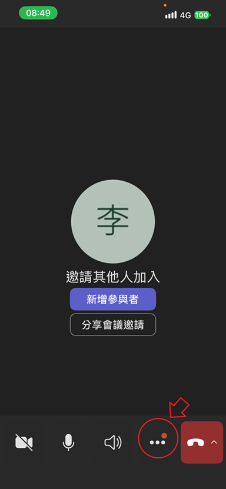
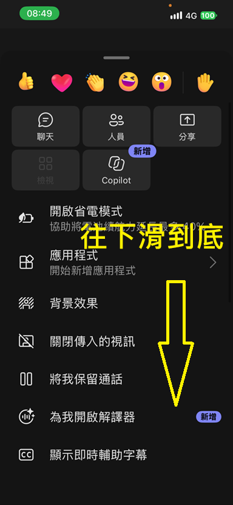
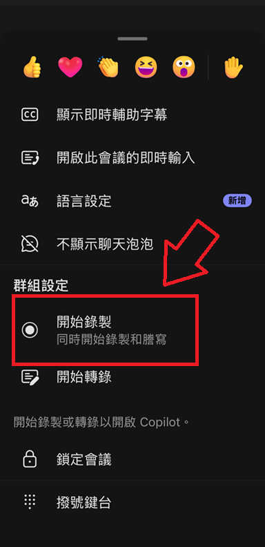
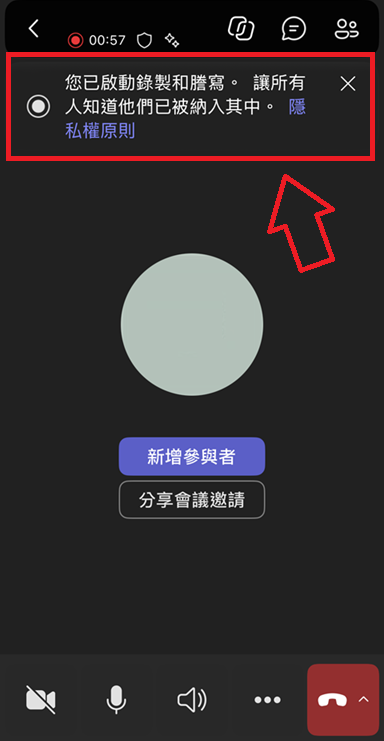

1
在會議畫面點選「…」
進入 Teams 會議後，在下方工具列找到三個點的「更多」按鈕並點選，開啟完整的會議功能選單。
畫面中的紅圈與箭頭標示了要點選的位置。

MEETINGTUTOR × MICROSOFT TEAMS
跟著這四個畫面，在 Teams 行動版開啟「錄製和謄寫」。會議結束後即可從 Teams 取得逐字稿，匯入 MeetingTutor 製作會議記錄。
Teams 會開始錄製會議，並同步啟動謄寫；畫面頂端會顯示錄製與謄寫已啟動的提示。
STEP BY STEP
以下畫面以 iPhone 版 Teams 為例；不同版本的按鈕文字或位置可能略有不同。
進入 Teams 會議後，在下方工具列找到三個點的「更多」按鈕並點選，開啟完整的會議功能選單。
畫面中的紅圈與箭頭標示了要點選的位置。

更多選單一開始會顯示聊天、人員、分享等功能。請在這個選單裡向下捲動，繼續尋找錄製功能。
黃色文字與向下箭頭提示需滑到選單底部。

捲動後，在「群組設定」區塊點選「開始錄製」。畫面說明此選項會同時開始錄製和謄寫。
紅框與箭頭標示的就是要選擇的功能。

回到會議畫面後，頂端出現「您已啟動錄製和謄寫，讓所有人知道他們已被納入其中」的通知，即代表設定完成。
頂端的紅色錄製圖示也會持續顯示計時。

會議結束後，請在 Teams 下載逐字稿檔案（建議使用 .vtt 格式），再回到 MeetingTutor 上傳檔案，即可使用 AI 整理摘要、決議與待辦事項。